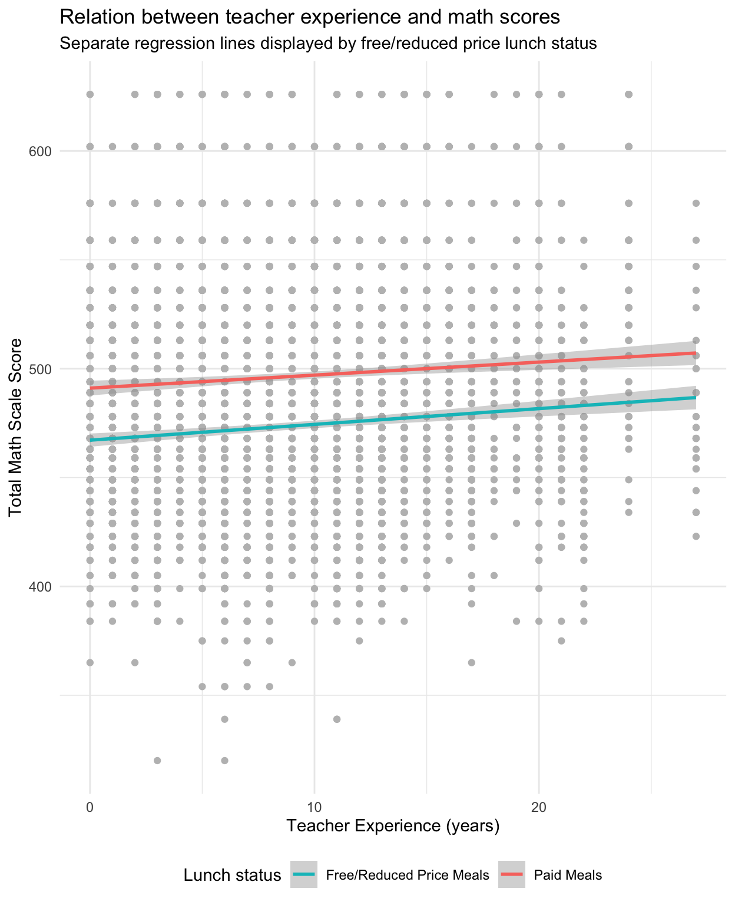

HW6
<<<<<<< Updated upstream
Stashed changes
What is Intersectionality and why is it important?
Crenshaw (1987) emphasized the importance of intersectionality as a research framework, stating that “Because the intersectional experience is greater than the sum of racism and sexism, any analysis that does not take intersectionality into account cannot sufficiently address the particular manner in which Black women are subordinated” (p. 140).” Studies show that this stands true as studies show that infants and toddlers of color are underrepresented in Early Intervention (EI) services (see Cycyk et al. 2022; Cho and Gannotti 2005; Cycyk and Durán 2020).
Table 1
| sex | frl | math_mean | math_sd | rdg_mean | rdg_sd |
|---|---|---|---|---|---|
| boy | no | 492.85 | 46.34 | 441.46 | 32.32 |
| boy | yes | 469.87 | 46.09 | 425.38 | 26.63 |
| girl | no | 501.21 | 45.96 | 448.54 | 34.52 |
| girl | yes | 477.51 | 46.30 | 430.80 | 27.42 |
Description: As it is presented in the Table 1, both boy and girl in the no free/reduced lunch group has higher average standardized scores than the boy and girls in the free lunch group. In addition, in the free lunch group, the boys average standardized scores is lower than the girls. It seems the both household income and gender influence the students reading and math performance.
=======Description: As it is presented in the Table 1, both boys and girls in the no free/reduced lunch group has higher average standardized scores than the boys and girls in the free lunch group. In addition, in the free lunch group, the boys’ average standardized score is lower than that of the girls’. It seems the both household income and gender influence the students reading and math performance.
>>>>>>> origin/mainPlot 1 Relationship between teacher experience and math scores
References
Cho, Su-Je, and Mary E Gannotti. 2005. “Korean-American Mothers’ Perception of Professional Support in Early Intervention and Special Education Programs.” Journal of Policy and Practice in Intellectual Disabilities 2 (1): 1–9.
Crenshaw, Martha. 1987. “Theories of Terrorism: Instrumental and Organizational Approaches.” The Journal of Strategic Studies 10 (4): 13–31.
Cycyk, Lauren M, Stephanie De Anda, Katrina L Ramsey, Bruce S Sheppard, and Katharine Zuckerman. 2022. “Moving Through the Pipeline: Ethnic and Linguistic Disparities in Special Education from Birth Through Age Five.” Educational Researcher 51 (7): 451–64.
Cycyk, Lauren M, and Lillian Durán. 2020. “Supporting Young Children with Disabilities and Their Families from Undocumented Immigrant Backgrounds: Recommendations for Program Leaders and Practitioners.” Young Exceptional Children 23 (4): 212–24.